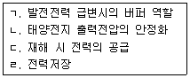
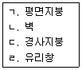

신재생에너지발전설비산업기사 (2016-05-08 기출문제)
1과목: 태양광 발전 시스템 이론
1. 박막 실리콘 태양전지 설명 중 틀린 것은?
- 실리콘의 사용량이 적어 저렴하다.
- 재료는 인듐을 사용한다.
- 아몰퍼스 실리콘 박막을 적층한 방식이다.
- 텐템형 실리콘 태양전지 변화효율은 12%정도이다.
(정답률: 80%)

2. 태양전지의 효율은 설치된 출력의 실제적 이용 상태를 말하는 것으로, 실제 100W의 일사량에서 효율이 15%, 태양전지의 출력이 15W이면 변환 효율은 몇 %가 되는가?
- 10
- 15
- 20
- 30
(정답률: 74%)
3. 최대눈금이 50V인 직류전압계가 있다. 이 전압계를 사용하여 150V의 전압을 측정하려면 배율기의 저항은 몇 Ω을 사용하면 되는가? (단, 전압계의 내부저항은 5000Ω이다.)
- 1000
- 2500
- 5000
- 10000
(정답률: 73%)
4. 뇌 서지 등의 피해로부터 태양광발전시스템을 보호하기 위한 대책으로 적절하지 않은 것은?
- 피뢰소자를 어레이 주회로 내부에 분산시켜 설치하고 접속함에도 설치한다.
- 저압배전선에서 침입하는 뇌 서지에 대해서는 분전반에 피뢰소자를 설치한다.
- 피뢰소자의 접지측 배선은 되도록 길게 유지하면서 설치한다.
- 뇌우 다발지역에서는 교류전원측으로 내뢰트랜스를 설치한다.
(정답률: 80%)
5. 태양전지에 입사되는 빛을 최대로 흡수함으로써 효율을 증가시킬 수 있다. 이를 위한 광학적 손실을 줄이는 대책으로 틀린 것은?
- 표면 조직화
- 웨이퍼 두께 감소
- 전극 면적 최소화
- 표면 반사방지 코팅
(정답률: 75%)
6. 실리콘 태양전지 중 변환 효율이 가장 높은 것은?
- 단결정 Si
- 다결정 Si
- 박막 Si
- 아몰퍼스 Si
(정답률: 87%)
7. 태양전지를 재료에 의하여 분류한 것으로 틀린 것은?
- 유기물
- 화합물
- 염료감응형
- 잉곳/웨이퍼
(정답률: 77%)
8. 태양광 발전시스템의 발전효율을 극대화하기 위한 시스템은?
- 고정형 시스템
- 반고정형 시스템
- 추적형 시스템
- 건물일체형 시스템
(정답률: 85%)
9. 태양광 발전시스템의 축전지 기능을 모두 나타낸 것은?

- ㄱ, ㄴ, ㄷ, ㄹ
- ㄱ, ㄴ, ㄹ
- ㄱ, ㄷ, ㄹ
- ㄴ, ㄷ, ㄹ
(정답률: 81%)
10. 태양광 발전시스템의 특징이 아닌 것은?
- 송전 손실의 증가
- 최대부하전력 절감
- 에너지의 안정적인 공급
- 국지적인 전력수요에 대응
(정답률: 75%)
11. 다음 [보기]에서 태양광 모듈의 설치가 가능한 위치를 모두 나타낸 것은?

- ㄱ, ㄴ, ㄷ
- ㄱ, ㄴ, ㄹ
- ㄱ, ㄷ, ㄹ
- ㄱ, ㄴ, ㄷ, ㄹ
(정답률: 82%)
12. 역률이 50%이고 1상의 임피던스가 60Ω인 유도 부하를 △로 결선하고 여기에 병렬로 저항 20Ω을 Y결선으로 하여 3상 선간전압 200V를 가할 때, 소비전력(w)은?
- 2000
- 2200
- 2500
- 3000
(정답률: 45%)
13. 태양광 모듈의 뒷면 표시 사항에 해당되지 않은 것은?
- 공칭 질량
- 내진 등급
- 공칭 단락전류
- 내풍압성의 등급
(정답률: 77%)
14. 태양전지 모듈의 열 발생 원인으로 틀린 것은?
- 정적하중
- 셀에서 적외선 흡수
- 모듈의 전기적 동작
- 모듈상부 표면으로부터의 반사
(정답률: 83%)
15. 태양전지의 발전원리에 관한 설명으로 틀린 것은?
- 태양전지는 n형 반도체와 p형 반도체를 이어 맞춘 구조이다.
- 빛이 흡수되면 전자는 n형 반도체에, 정공은 p형 반도체에 모인다.
- n형 반도체는 실리콘 원자 1개의 전자가 부족한 상태를 이용한다.
- 반도체가 빛을 흡수하면 이자가 생겨 태양전지 내부의 전자를 이동시켜 전기를 발생한다.
(정답률: 73%)
16. 태양광 발전의 핵심요소기술로서 틀린 것은?
- 회전체 작동기술
- 태양전지 제조기술
- 전력변환장치(PCS) 기술
- BOS(Balance of system) 기술
(정답률: 76%)
17. 인산형 연료전지 발전시스템의 주요 구성기기가 아닌 것은?
- 인버터
- 축전지
- 제어장치
- 연료전지본체
(정답률: 57%)
18. 신재생에너지의 중요성에 관한 내용으로 거리가 먼 것은?
- 기후변화협약 대응
- 발전에너지의 높은 효율
- 최근 유가의 불안정
- 화석연료의 고갈문제 해결
(정답률: 69%)
19. PN접합 다이오드에 공핍층이 생기는 경우는?
- (-)전압만 인가할 때 생긴다.
- 전압을 가하지 않을 때 생긴다.
- 전자와 정공의 확산에 의해 생긴다.
- 다수 전송파가 많이 모여 있는 순간에 생긴다.
(정답률: 85%)
20. 역류 방지 다이오드의 용량은 모듈 단락전류의 몇 배 이상이어야 하는가?
- 1.25 배
- 1.5 배
- 2 배
- 3 배
(정답률: 39%)
2과목: 태양광 발전 시스템 시공
21. 역률을 개선하였을 경우 그 효과로 맞지 않는 것은?
- 전력손실의 감소
- 전압강하의 감소
- 각종기기의 수명연장
- 설비용량의 무효분 증가
(정답률: 84%)
22. 책임감리원은 최종감리보고서를 감리기간 종료 후 며칠 이내에 발주자에게 제출하여야 하는가?
- 3일 이내
- 7일 이내
- 14일 이내
- 30일 이내
(정답률: 39%)
23. 인버터의 직류측 회로를 비접지로 하는 경우 비접지의 확인방법이 아닌 것은?
- 테스터로 확인
- 검전기로 확인
- 간이측정기 사용
- 활선접근경보장치사용
(정답률: 75%)
24. 태양전지 모듈의 시공기준에 대한 설명으로 틀린 것은?
- 전기줄, 피뢰침, 안테나 등의 미약한 음영도 장애물로 본다.
- 태양전지 모듈 설치열이 2열 이상인 경우 앞열은 뒷열에 음영이지지 않도록 설치하여야 한다.
- 장애물로 인한 음영에도 불구하고 일조시간은 1일 5시간(춘분(3~5월), 추분(9~11월)기준)이상이어야 한다.
- 설치용량은 사업계획서상의 모듈 설계용량과 동일하여야 하나 동일하게 설치할 수 없는 경우에 한하여 설계용량의 110% 이내까지 가능하다.
(정답률: 78%)
25. 태양전지 모듈의 배선을 지중으로 시공하는 경우의 설명으로 틀린 것은?
- 지중배선과 지표면의 중간에 매설표시 시트를 포설한다.
- 지중배관 시 중량물의 압력을 받는 경우 0.6m 이상의 깊이로 매설한다.
- 지중매설배관은 배선용 탄소강 강관, 내충격성 경화비닐 전선관을 사용한다.
- 지중전선로의 매설개소에는 필요에 따라 매설깊이, 전선방향 등을 지상에 표시한다.
(정답률: 83%)
26. 감리원은 공사업자의 시공기술자 등이 공사현장에 적합하지 않다고 인정되는 경우에는 시정을 요구하고 발주자에게 그 실정을 보고하여 교체가유가 인정되면 공사업자는 교체요구에 응하여야 한다. 교체사유로서 틀린 것은?
- 시공관리책임자가 불법 하도급을 하거나 이를 방치하였을 때
- 시공관리책임자가 시공능력이 준수하다고 인정되나 정당한 사유 없이 기성공정이 예정공정보다 빠를 때
- 시공관리 책임자가 감리원과 발주자의 사전승낙을 받지 아니하고 정당한 사유 없이 해당 공사현장을 이탈할 때
- 시공관리책임자가 고의 또는 과실로 공사를 조잡하게 시공하거나 부실시공을 하여 일반인에게 위해를 끼친 때
(정답률: 84%)
27. 피뢰기의 정격 전압이란?
- 충격파의 방전 개시 전압
- 사용 주파수의 방전 개시 전압
- 속류의 차단이 되는 최고의 교류 전압
- 충격 방전 전류를 통하고 있을 때의 단자전압
(정답률: 72%)
28. 감리원은 매 분기마다 공사업자로부터 안전관리 결과 보고서를 제출받아 이를 검토하고 미비한 사항이 있을 때에는 시정하도록 조치하여야 한다. 안전관리결과 보고서에 포함되는 서류가 아닌 것은?
- 안전관리 조직표
- 직원 건강기록부
- 안전교육 실적표
- 안전보건 관리체계
(정답률: 85%)
29. 지붕설치형 태양광 발전방식의 설치에 대한 설명으로 틀린 것은?
- 태양전지는 지붕 중앙부에 놓는 것이 바람직하다.
- 태양전지 모듈의 접속은 전선 또는 커넥터 부착 전선 등을 사용한다.
- 건축물은 고정하중, 적제하중, 적설하중, 지진등에 대하여 안전한 구조를 가져야 한다.
- 건축물을 건축하거나 대수선하는 경우에는 지방자치단체장이 정하는 바에 따라 구조의 안전을 확인한다.
(정답률: 67%)
30. 전력계통에서 3권선 변압기(Y-Y-△)를 사용하는 주된 이유는?
- 노이즈 제거
- 전력손실 감소
- 2가지 용량 사용
- 제3고조파 제거
(정답률: 83%)
31. 태양광 발전시스템의 발전형태별 태양전지 어레이 설치 시 준비 및 주의사항으로 틀린 것은?
- 가대 및 지지대는 현장에서 직접 용접한다.
- 태양전지 어레이 기초면 수평기, 수평줄을 확보한다.
- 너트의 풀림방지는 이중너트를 사용하고 스프링 와셔를 체결한다.
- 지지대 기초 앵커볼트의 유지 및 매립은 강제프레임 등에 의하여 고정하는 방식으로 한다.
(정답률: 82%)
32. 태양광 발전시스템 시공 시 작업의 종류에 따른 필요 공구가 잘못 연결된 것은?
- 도통시험 - 레벨메터
- 프레임 컷팅 - 스피드 커터
- 앵커 구멍 천공 - 앵커 드릴
- 절삭부분 가공 - 핸드 그라인더
(정답률: 80%)
33. 감리원의 공사시행 단계에서의 감리업무가 아닌 것은?
- 인허가 관련업무
- 품질관리 관련업무
- 공정관리 관련업무
- 환경관리 관련업무
(정답률: 79%)
34. 태양전지 어레이를 설치하기 위한 기초의 요구조건으로 틀린 것은?
- 허용 침하량 이상의 침하
- 설계하중에 대한 안정성 확보
- 현장여건을 고려한 시공 가능성
- 환경변화, 국부적 지반 쇄굴 등에 대한 저항
(정답률: 72%)
35. 설계 감리원의 기본임무 수행 사항이 아닌 것은?
- 과업지시서에 따라 업무를 성실히 수행하고 설계의 품질향상에 노력하여야 한다.
- 설계용역 계약 및 설계감리용역 계약내용이 충실이 이행될 수 있도록 하여야 한다.
- 설계 및 설계감리용역 시행에 따른 업무연락, 문제점 파악 및 민원해결 등을 성실히 수행하여야 한다.
- 설계공정의 진척에 따라 설계자로부터 필요한 자료 등을 제출받아 설계용역이 원활히 추진될 수 있도록 설계감리 업무를 수행하여야 한다.
(정답률: 75%)
36. 태양전지 모듈 시공 시의 안전대책에 대한 고려사항으로 적절하지 않은 것은?
- 절연된 공구를 사용한다.
- 강우 시에는 반드시 우비를 착용하고 작업에 임한다.
- 안전모, 안전대, 안전화, 안전허리띠 등을 반드시 착용한다.
- 작업자는 자신의 안전확보와 2차 재해방지를 위해 작업에 적합한 복장을 갖춰 작업에 임해야 한다.
(정답률: 88%)
37. 어떤 건물에서 총 설비 부하요량이 850kW, 수용률 60%라면, 변압기의 용량은 최소 몇 kVA로 하여야 하는가? (단, 설비부하의 종합역률은 0.75이다.)
- 510
- 620
- 680
- 740
(정답률: 60%)
38. 간선의 굵기를 산정하는 결정요소가 아닌 것은?
- 허용전류
- 기계적 강도
- 전압강하
- 불평형 전류
(정답률: 75%)
39. 배전선로의 손실 경감과 관계 없는 것은?
- 승압
- 역률 개선
- 다중접지방식 채용
- 부하의 불평형 방지
(정답률: 78%)
40. 태양광 발전시스템의 어레이 설치 종류가 아닌 것은?
- 양축식
- 일자식
- 단축식
- 고정식
(정답률: 66%)
3과목: 태양광 발전 시스템 운영
41. 태양광 발전사업의 허가를 받기위해 전기사업허가신청서와 함께 제출하는 사업계획서 내용 중 전기 설비 개요에 포함되어야 할 사항으로 틀린 것은?
- 태양전지의 종류
- 인버터의 입력전압
- 집광판의 설치단가
- 태양전지의 정격출력
(정답률: 79%)
42. 발전설비용량이 1000kW인 경우 발전사업 허가권자는?
- 시ㆍ도지사
- 한국전력공사
- 한국전기안전공사
- 산업통상자원부장관
(정답률: 77%)
43. 태양광 발전시스템 보수점검 작업 시 점검 전 유의사항이 아닌 것은?
- 회로도 검토
- 오조작 방지
- 접지선 제거
- 무전압 상태확인
(정답률: 80%)
44. 중대형 태양광발전용 독립형 인버터에서 정상특성 시험 시 시험항목으로 틀린 것은?
- 효율 시험
- 누설전류 시험
- 대기 손실 시험
- 온도 상승 시험
(정답률: 45%)
45. 검출기에 의해 츠정된 데이터를 컴퓨터 및 먼 거리로 전송하는 것은?
- 연산장치
- 표시장치
- 기억장치
- 신호변환기
(정답률: 81%)
46. 접지저항의 측정방법이 아닌 것은?
- 보호 접지저항계 측정법
- 전위차계 접지저항계 측정법
- 클램프 온(Clamp On) 측정법
- 콜라우시(Kohlrausch) 브리지법
(정답률: 55%)
47. 결정질 태양전지모듈이 태양광에 노출되는 경우에 따라 유기되는 열화정도를 테스트할 수 있는 장치로 옳은 것은?
- UV 시험장치
- 항온항습 장치
- 염수분무 장치
- 솔라시뮬레이터
(정답률: 68%)
48. 전기사업 허가신청서의 처리절차로 옳은 것은?
- 신청서 작성 및 제출 → 검토 → 접수 → 전기위원회 심의 → 허가증 발급
- 신청서 작성 및 제출 → 접수 → 검토 → 전기위원회 심의 → 허가증 발급
- 신청서 작성 및 제출 → 전기위원회 심의 → 검토 → 접수 → 허가증 발급
- 신청서 작성 및 제출 → 접수 → 전기위원회 심의 → 검토 → 허가증 발급
(정답률: 74%)
49. 태양광 발전설비의 안전관리를 위해 안전관리자가 보유하여야 할 장비로 적당하지 않은 것은?
- 검전기
- 각도계
- 전압 Tester
- Earth Tester
(정답률: 77%)
50. 태양광 발전시스템의 일상점검 점검항목이 아닌 것은?
- 인버터 - 통풍 확인
- 접속함 - 절연저항 측정
- 인버터 - 표시부의 이상표시
- 태양전지모듈 - 묘면의 오염 및 파손
(정답률: 74%)
51. 결정질 실리콘 태양전지모듈의 최대 출력 결정 시 품질기준으로 틀린 것은?
- 시험 시료의 출력균일도는 평균출력의 ±3% 이내일 것
- 시험시료의 최종 환경시험 후 최대출력의 열화는 최초 최대출력의 -8%를 초과하지 않을 것
- 해당 태양전지모듈의 최대 추력을 측정하되, 시험시료의 평균출력은 정격출력 이상일 것
- 최대 시스템 전압의 두 배에 1000V를 더한 것과 같은 전압을 최대 500V/s이하의 상승률로 태양전지모듈의 출력단자와 태널 또는 점지단자(프레임)에 1분 간 유지할 것
(정답률: 63%)
52. 시스템 성능평가의 뷴류로 틀린 것은?
- 신뢰성
- 사이트
- 발전성능
- 분석가격
(정답률: 69%)
53. 직독식 접지저항계에 의한 접지저항 측정 시 E단자를 접지극에 접속하고 일직선상으로 몇 m 이상 떨어져 보조접지봉을 박는가?
- 5
- 10
- 15
- 20
(정답률: 69%)
54. 독립형 태양광 발전시스템의 주요 구성장치가 아닌 것은?
- 인버터
- 태양전지모듈
- 충방전 제어기
- 송전설비 및 배전시스템
(정답률: 80%)
55. 절연변압기가 부착된 태양광인버터의 정격전압이 600V일 때 절연저항측정 시 사용하는 절연저항계는 몇 V 용을 이용하는가?
- 500
- 1000
- 2000
- 3000
(정답률: 76%)
56. 산업통상자원부장관의 허가가 필요한 발전설비용량(kW)은?
- 2000
- 2500
- 3000
- 3500
(정답률: 50%)
57. 송전설비공사의 하자 보수 책임기간은 몇 년인가?
- 1년
- 2년
- 3년
- 4년
(정답률: 66%)
58. 태양전지모듈 회로의 전로 사용전압이 400V 이상인 경우 절연저항 값은 몇 MΩ 이상이어야 하는가?
- 0.1
- 0.2
- 0.3
- 0.4
(정답률: 65%)
59. 송전설비의 배전반에서 주회로의 인입부분 및 인출부분에 대한 일상점검의 내용이 아닌 것은?
- 볼트 종류의 이완상태에 따른 진동음 발생여부를 점검한다.
- 케이블의 접속부분에서 과열현상에 의한 이상한 냄새의 발생 여부를 점검한다.
- 케이블의 관통부분에서 곤충이나 벌레 등의 침입 가능성이 있는지 점검한다.
- 부싱부분에서 접지 및 절연저항 값을 측정하고 점검한다.
(정답률: 84%)
60. 정기점검 시 주회로용 퓨즈의 외부일반 점검 목적과 점검내용으로 틀린 것은?
- 지시 표시 - 영점조정은 잘 되어 있는지 확인
- 손상 - 퓨즈통, 애자 등에 균열, 변형 여부 확인
- 변색 - 퓨즈통, 퓨즈 홀더의 단자부에 변색 여부 확인
- 볼트의 조임 이완 - 단자부의 볼트 조임의 이완 여부 확인
(정답률: 66%)
4과목: 신재생 에너지 관련 법규
61. 고압전로에 사용하는 포장퓨즈는 정격전류의 몇 배에 견디어야 하는가?
- 1.10
- 1.25
- 1.30
- 2.00
(정답률: 43%)
62. 안전공사 및 전기판매사업자는 일반용 전기설비의 점검 또는 점검 결과의 통지를 한 경우 서류 또는 자료를 몇년간 보존해야 하는가?
- 1년
- 2년
- 3년
- 5년
(정답률: 64%)
63. 전로의 중성점을 접지하는 목적에 해당하지 않는 것은?
- 이상전압의 억제
- 대지전압의 저하
- 보호 장치의 확실한 동작의 확보
- 부하전류의 일부를 대지로 흐르게 함으로써 전선의 절약
(정답률: 77%)
64. 7000V를 초과하는 전압은?
- 저압
- 고압
- 특고압
- 초고압
(정답률: 77%)
65. 가공 전선로에 사용하는 지지물의 강도 계산에 적용하는 풍압하중의 종류는?
- 1종, 2종, 3종
- A종, B종, C종
- 수평, 수직, 각도
- 갑종, 을종, 병종
(정답률: 76%)
66. 전기공사업의 등록시준으로 옳은 것은?(오류 신고가 접수된 문제입니다. 반드시 정답과 해설을 확인하시기 바랍니다.)
- 자본금 1억원 이상, 전기공사기술자 2명 이상, 공부상 면적이 20m2 이상 사무실 확보
- 자본금 2억원 이상, 전기공사기술자 3명 이상, 공부상 면적이 25m2 이상 사무실 확보
- 자본금 3억원 이상, 전기공사기술자 2명 이상, 공부상 면적이 30m2 이상 사무실 확보
- 자본금 4억원 이상, 전기공사기술자 2명 이상, 공부상 면적이 25m2 이상 사무실 확보
(정답률: 66%)
67. 국가기관, 지방자치단체, 공공기관, 그 밖에 대통령령으로 정하는 자가 신ㆍ재생에너지 기술개발 및 이용ㆍ보급에 관한 계획을 수립ㆍ시행하려면 대통령령으로 정하는 바에 따라 미리 누구와 협의를 하여야 하는가?
- 시ㆍ도지사
- 국가기술표준원장
- 한국전력공사사장
- 산업통상자원부장관
(정답률: 81%)
68. 수소와 산소의 전기화학 반응을 통하여 전기 또는 열을 생산하는 설비는?
- 연료전지 설비
- 산소에너지 설비
- 수소에너지 설비
- 수소 및 산소에너지 설비
(정답률: 73%)
69. 발전량의 일정량 이상을 의무적으로 신ㆍ재생에너지를 이용하여 공급하는 자로서 대통령령으로 정하는 자가 아닌 것은?
- 한국광물공사
- 한국수자원공사
- 한국지역난방공사
- 50만킬로와트 이상의 발전설비(신ㆍ재생에너지 설비는 제외한다)를 보유하는 자
(정답률: 78%)
70. 온실가스의 종류가 아닌 것은?
- 메탄
- 질소
- 이산화질소
- 수소불화탄소
(정답률: 80%)
71. 전기사업법에서 정의하는 용어의 뜻이 틀린 것은?
- ‘전기사업’이란 발전사업ㆍ송전사업ㆍ배전사업ㆍ전기판매업 및 구역전기사업을 말한다.
- ‘전력시장’이란 전력거래를 위하여 한국전력거래소가 개설하는 시장을 말한다.
- ‘보편적 공급’이란 전기사용자가 언제 어디서나 최소한의 요금을 전기를 사용할 수 있도록 전기를 공급하는 것을 말한다.
- ‘발전사업’이란 전기를 생산하여 이를 전력시장을 통하여 전기 판매사업자에게 공급하는 것을 주된 목적으로 하는 사업을 말한다.
(정답률: 73%)
72. 신ㆍ재생에너지의 이용ㆍ보급을 촉진하기 위한 보급사업의 종류가 아닌 것은?
- 신기술의 적용사업 및 시범사업
- 지방자치단체와 연계한 보급사업
- 실증단계의 신ㆍ재생에너지 설비의 보급을 지원하는 사업
- 환경친화적 신 재생에너지 집적화단지 및 시범단지 조성사업
(정답률: 57%)
73. 고압 및 특고압 전로에 시설하는 피뢰기에는 몇 종 접지공사를 해야 하는가?
- 제1종 접지공사
- 제2종 접지공사
- 제3종 접지공사
- 특별 제3종 접지공사
(정답률: 54%)
74. 전기판매사업자가 전력시장운영규칙으로 정하는 바에 따라 우선적으로 구매할 수 있는 대상으로 틀린 것은?
- 자가용전기설비를 설치한 자
- 수력발전소를 운영하는 발전사업자
- 설비용량이 3만 킬로와트 이하인 발전사업자
- 발전사업의 허가를 받은 것으로 보는 집단에너지사업자
(정답률: 49%)
75. 신재생에너지 개발ㆍ이용ㆍ보급 촉진법에 의해 공급이증기관이 개설한 거래시장 외에서 공급인증서를 거래한 자에게 부과하는 벌칙으로 옳은 것은?
- 1년 이하의 징역 또는 1천만원 이하의 벌금
- 2년 이하의 징역 또는 2천만원 이하의 벌금
- 3년 이하의 징역 또는 3천만원 이하의 벌금
- 3년 이상의 징역 또는 지원받은 금액의 3배 이상에 상당하는 벌금
(정답률: 50%)
76. 전력계통에 연계하는 태양전지 발전소에 시설하는 계측 장치로 옳은 것은?
- 주요변압기의 전압 및 전류 또는 전력
- 주요변압기의 전압 및 전류 또는 온도
- 주요변압기의 전압 및 전류 또는 역률
- 주요변압기의 전압 및 유온 또는 주파수
(정답률: 76%)
77. 정부는 중소기업의 녹색기술 및 녹색경영을 촉진하기 위하여 다양한 시책을 수립ㆍ시행할 수 있다. 다음 중 이에 해당하지 않는 사항은?
- 탄소시장의 개설 및 거래 활성
- 중소기업의 녹색기술 사업화의 촉진
- 대기업과 중소기업의 공동사업에 대한 우선 지원
- 녹색기술ㆍ녹색산업에 관한 전문인력 양성ㆍ공급 및 국외진출
(정답률: 58%)
78. 동일인이 두 종류 이상의 전기사업을 할 수 있는 경우가 아닌 것은?
- 도서지역에서 전기사업을 하는 경우
- 발전사업과 전기판매사업을 겸업하는 경우
- 배전사업과 전기판매사업을 겸업하는 경우
- 발전사업의 허가를 받은 것으로 보는 집단에너지사업자가 전기판매사업을 겸업하는 경우
(정답률: 66%)
79. 450/750 V 일반용 단심 비닐 절연 전선을 사용한 저압 가공전선이 위쪽에는 상부 조영재와 접근하는 경우의 전선과 상부 조영재 상호간의 최소 이격거리(m)는?
- 1.0
- 1.2
- 2.0
- 2.5
(정답률: 49%)
80. 공급의무자의 의무공급량 중 일정부분은 산업통상자원부장관이 균형 있는 이용ㆍ보급이 필요하여 이 에너지로 공급하도록 규정하고 있는데 다음 중 어떤 에너지인가?
- 태양의 빛에너지를 변환시켜 전기를 생산하는 방식의 태양에너지
- 바람의 에너지를 변환시켜 전기를 생산하는 방식의 풍력에너지
- 해양의 조수ㆍ파도ㆍ해류ㆍ온도차 등을 변환시켜 전기를 생산하는 방식의 해양에너지
- 바이오에너지를 변환시켜 전기를 생산하는 방식의 바이오 에너지
(정답률: 78%)